This document covers the fundamental building blocks of the agent-swarm-kit framework and their orchestration patterns. It explains the core runtime components including agents, swarms, sessions, and data management systems that enable multi-agent AI workflows.
For information about the service architecture and dependency injection system, see Service Architecture. For AI model integrations and adapters, see AI Integration. For practical implementation patterns, see Usage Patterns.
The agent system centers around ClientAgent, which implements the IAgent interface and serves as the primary execution unit for AI interactions. Each agent manages its own completion engine, tool execution, and message processing within a session context.
Agent Execution Pattern
The ClientAgent follows a structured execution pattern defined in the EXECUTE_FN function. When a message is received, the agent pushes it to history, retrieves available tools, calls the completion engine, and processes any resulting tool calls.
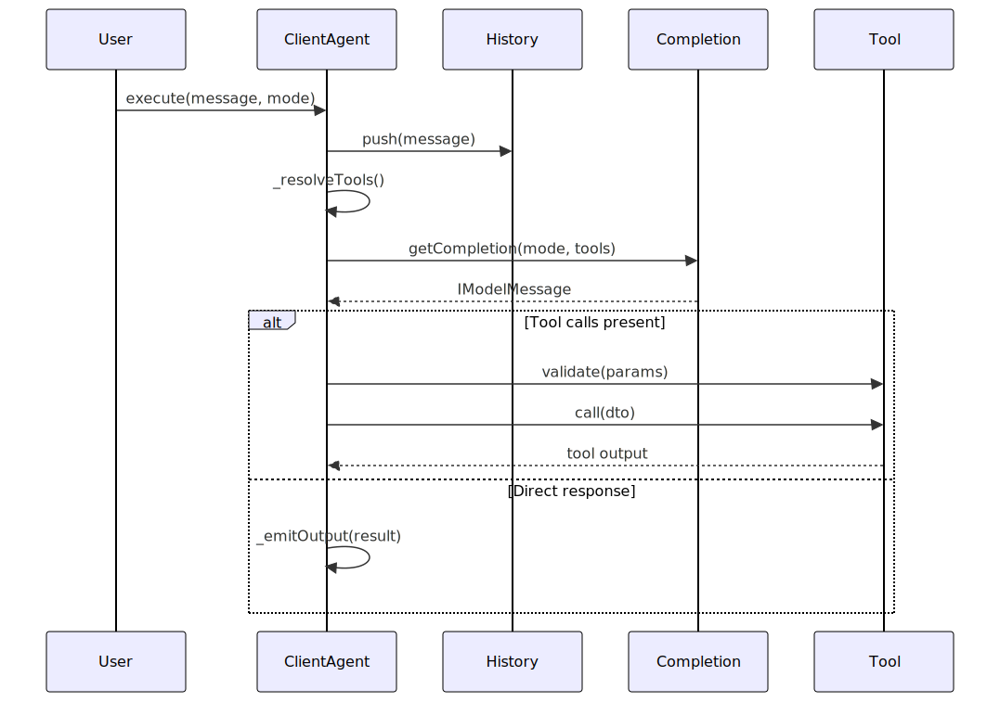
Tool Integration
Agents integrate with external functions through the IAgentTool interface. Tools can be synchronous or asynchronous and support validation, lifecycle callbacks, and abort signals for cancellation.
ClientSwarm manages collections of agents and coordinates navigation between them. It maintains an active agent reference and a navigation stack to track agent transitions within a client session.
Agent Navigation
The swarm supports dynamic agent switching through navigation tools. When an agent calls a navigation function, the swarm updates its active agent reference and can maintain a stack of previous agents for potential rollback.
Message Delegation
ClientSession provides client isolation and manages the communication channel between users and the swarm. It enforces policies, handles message validation, and coordinates with the underlying swarm for execution.
Session Execution Flow
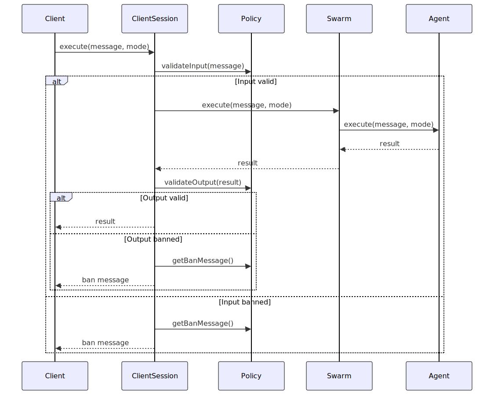
The framework provides three primary data management components: History for message tracking, Storage for embedding-based search, and State for client-specific data persistence.
The tool system enables agents to interact with external functions and services. Tools are defined through IAgentTool interfaces and can be dynamically resolved, validated, and executed within agent workflows.
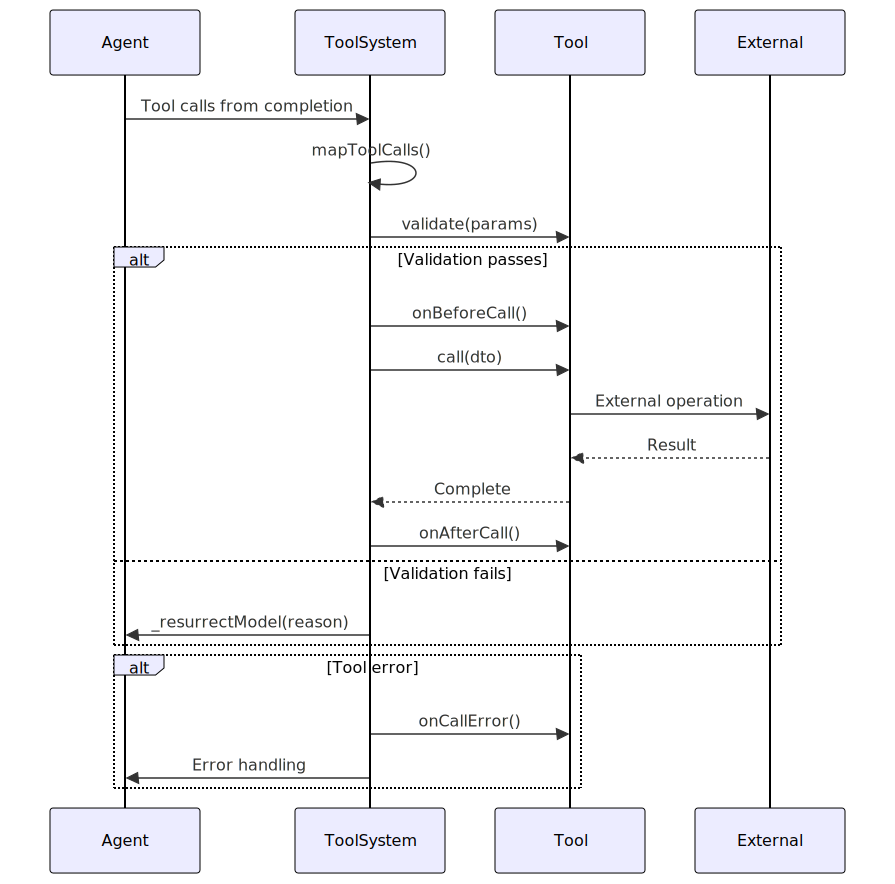
MCP Tool Integration
The framework supports Model Context Protocol (MCP) tools through the mapMcpToolCall function, which transforms external MCP tool definitions into IAgentTool instances.
The core components integrate through dependency injection and event-driven communication patterns. The system uses memoization for efficient instance management and subjects for reactive programming.
The framework uses memoize from functools-kit to cache component instances by composite keys, ensuring efficient resource utilization and consistent state management across client sessions.
Memoization Pattern
AgentConnectionService.getAgent: ${clientId}-${agentName}SessionConnectionService.getSession: ${clientId}-${swarmName}SwarmConnectionService.getSwarm: ${clientId}-${swarmName}